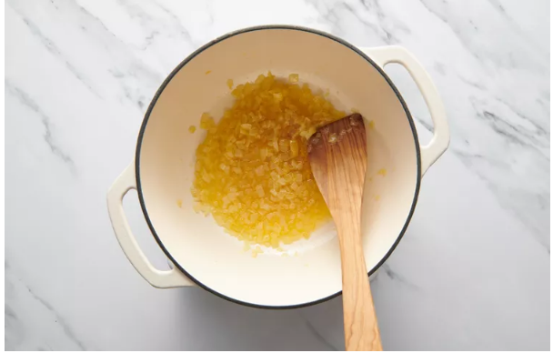
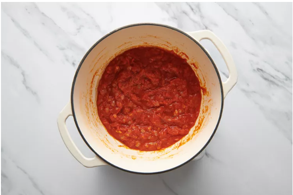
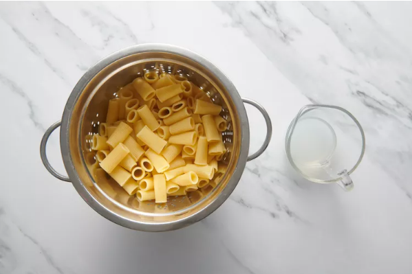
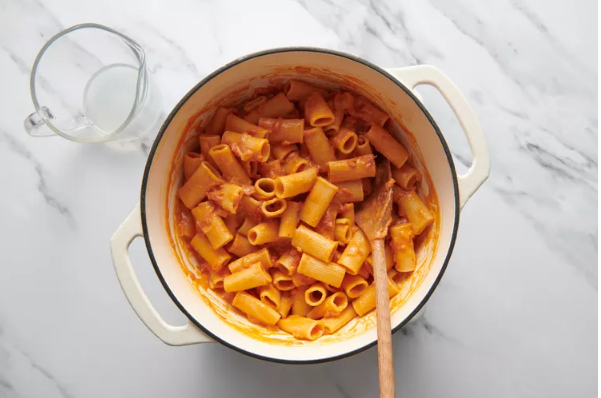

A judicious amount of heavy cream enriches this simple tomato sauce, producing a lush texture that clings to the pasta without blanketing richnese for any night of the week.
This recipe is inspired by sommelier Derrick C. Westbrook of 1340 Beer Wine Spirits in Chicago, who named it his ideal dish for pairing with wine.
The addition of cream and butter heightens this simple tomato sauce without making it heavy. It's special but not extravagant, a wonderful choice.
Step 1: Melt butter in a large Dutch oven over medium. Add onion; cook, stirring occasionally, until tender and golden brown, about 5 minutes.
Step 2:Add tomatoes and their juices; bring to a boil over medium.Reduce heat to medium-low; simmer, stirring occasionally, until flavors meld and sauce thickens, about 30 minutes.
Step 3:Meanwhile, cook pasta in salted water according to package directions for al dente. Drain pasta, reserving 1/2 cup pasta cooking liquid.Stir cream, salt, black pepper, and crushed red pepper into tomato sauce. Add cooked pasta and toss to coat.
Step 4:Add reserved pasta cooking liquid, 1/4 cup at a time, until desired consistency is reached.
Step 5:Divide pasta evenly among 4 bowls; sprinkle with Parmesan and garnish with parsley.
